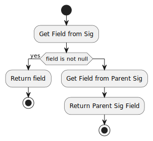

Class AlloyUtils
- java.lang.Object
-
- edu.gatech.gtri.obm.alloy.translator.AlloyUtils
-
public class AlloyUtils extends Object
A utility class related Alloy objects- Author:
- Miyako Wilson, AE(ASDL) - Georgia Tech
-
-
Constructor Summary
Constructors Constructor Description AlloyUtils()
-
Method Summary
All Methods Static Methods Concrete Methods Modifier and Type Method Description static Set<String>fieldsLabels(Set<edu.mit.csail.sdg.ast.Sig.Field> fields)Return the set of field names/labels for the given fields.static edu.mit.csail.sdg.ast.ModulegetAllReachableModuleByName(String _moduleNameLookingFor, edu.mit.csail.sdg.ast.Module _module)Return aModulereachable from the givenModuleif exists, otherwise return null.static edu.mit.csail.sdg.ast.ExprgetFieldAsExprFromSigOrItsParents(String _fieldNameLookingFor, edu.mit.csail.sdg.ast.Sig.PrimSig _sig)Return a field asExprof the given name/label in the given signature or its ancestor.static edu.mit.csail.sdg.ast.ExprgetFieldFromParentSig(String _fieldNameLookingFor, edu.mit.csail.sdg.ast.Sig.PrimSig _sig)Return a field asExprof the given name/label in the given signature's ancestor.static edu.mit.csail.sdg.ast.ExprgetFieldFromSig(String _fieldNameLookingFor, edu.mit.csail.sdg.ast.Sig.PrimSig _sig)Return a field asExprof the given name/label in the given signature.static edu.mit.csail.sdg.ast.Sig.FieldgetFieldFromSigOrItsParents(String _fieldNameLookingFor, edu.mit.csail.sdg.ast.Sig.PrimSig _sig)Return a field asFieldof the given name/label in the given signature or its ancestor.static edu.mit.csail.sdg.ast.FuncgetFunction(String _functionLabelLookingFor, edu.mit.csail.sdg.ast.Module _module)Return aFuncavailable from the givenModuleif exists, otherwise return null.static edu.mit.csail.sdg.ast.SiggetReachableSig(String _sigNameLookingFor, edu.mit.csail.sdg.ast.Module _module)Return aSigin the givenModuleby name/label if exists, otherwise return null.static booleanhasOwnOrInheritedFields(edu.mit.csail.sdg.ast.Sig.PrimSig _sig)Check if the givenSighas at least one field or not.static edu.mit.csail.sdg.parser.CompModuleimportAlloyModule(File _alloyFile)Create a CompModule object having signatures and facts from an alloy file.static edu.mit.csail.sdg.parser.CompModuleimportAlloyModule(String _absoluteAlloyFileName)Create a CompModule object having signatures and facts from an alloy absolute filenamestatic booleanisValidUserDefineParent(String _parentSigName)Check if the given _parentSigName signature is valid to be created.static StringremoveSlash(String _string)String utility - removes before "/" string if the given string contained "/" and return.static booleanselfOrAncestor(edu.mit.csail.sdg.ast.Sig.PrimSig _sig, edu.mit.csail.sdg.ast.Sig _lookingFor)Check if the _lookingFor signature is the _sig signature or _sig's ancestor.static List<String>sort(Set<String> strings)Sort the given strings alphabetically and return.static List<edu.mit.csail.sdg.ast.Sig.Field>sortFields(Set<edu.mit.csail.sdg.ast.Sig.Field> fields)Sort the given fields alphabetically based on their labels and returnstatic Set<edu.mit.csail.sdg.ast.Expr>toSigAllFacts(edu.mit.csail.sdg.ast.Sig _ownerSig, Set<edu.mit.csail.sdg.ast.Expr> _exprs)Modify each given expression by adding the given signature declaration and return.
-
-
-
Method Detail
-
importAlloyModule
public static edu.mit.csail.sdg.parser.CompModule importAlloyModule(File _alloyFile)
Create a CompModule object having signatures and facts from an alloy file.
- Parameters:
_alloyFile- (File) - an alloy file (*.als)- Returns:
- (CompModule) - the created CompModule
-
importAlloyModule
public static edu.mit.csail.sdg.parser.CompModule importAlloyModule(String _absoluteAlloyFileName)
Create a CompModule object having signatures and facts from an alloy absolute filename
- Parameters:
_absoluteAlloyFileName- (String) - an absolute filename for an alloy file (*.als)- Returns:
- (CompModule) - the created CompModule
-
selfOrAncestor
public static boolean selfOrAncestor(edu.mit.csail.sdg.ast.Sig.PrimSig _sig, edu.mit.csail.sdg.ast.Sig _lookingFor)Check if the _lookingFor signature is the _sig signature or _sig's ancestor.
- Parameters:
_sig- (Sig) - the signature to be compared with the _lookingFor signature_lookingFor- (Sig) - the _lookingFor signature- Returns:
- (boolean) true if the _lookingFor signature is _sig or _sig's ancestor, otherwise return false.
-
isValidUserDefineParent
public static boolean isValidUserDefineParent(String _parentSigName)
Check if the given _parentSigName signature is valid to be created. Make sure not have the same name as the library defined signatures.
- Parameters:
_parentSigName- (String) - the signature name to be validated.- Returns:
- (boolean) true if the given _parentSigName is valid signature to be created, otherwise return false.
-
hasOwnOrInheritedFields
public static boolean hasOwnOrInheritedFields(edu.mit.csail.sdg.ast.Sig.PrimSig _sig)
Check if the givenSighas at least one field or not.
- Parameters:
_sig- (PrimSig) - a signature checked- Returns:
- (boolean) - true if the given signature has a field or its ancestor has a field.
-
getFieldFromSig
public static edu.mit.csail.sdg.ast.Expr getFieldFromSig(String _fieldNameLookingFor, edu.mit.csail.sdg.ast.Sig.PrimSig _sig)
Return a field asExprof the given name/label in the given signature. If not found return null.
- Parameters:
_fieldNameLookingFor- (String) - the field name/label looking for._sig- (PrimSig) - the signature checked for having the field- Returns:
- (Expr) - a field if found, otherwise return null
-
getFieldFromParentSig
public static edu.mit.csail.sdg.ast.Expr getFieldFromParentSig(String _fieldNameLookingFor, edu.mit.csail.sdg.ast.Sig.PrimSig _sig)
Return a field asExprof the given name/label in the given signature's ancestor. If not found return null.
- Parameters:
_fieldNameLookingFor- (String) - the field name/label looking for._sig- (PrimSig) - the signature checked for having the field- Returns:
- (Expr) - a field if found, otherwise return null
-
getFieldAsExprFromSigOrItsParents
public static edu.mit.csail.sdg.ast.Expr getFieldAsExprFromSigOrItsParents(String _fieldNameLookingFor, edu.mit.csail.sdg.ast.Sig.PrimSig _sig)
Return a field asExprof the given name/label in the given signature or its ancestor. If not found return null.
- Parameters:
_fieldNameLookingFor- (String) - the field name/label looking for._sig- (PrimSig) - the signature checked for having the field- Returns:
- (Expr) - a field if found, otherwise return null
-
getFieldFromSigOrItsParents
public static edu.mit.csail.sdg.ast.Sig.Field getFieldFromSigOrItsParents(String _fieldNameLookingFor, edu.mit.csail.sdg.ast.Sig.PrimSig _sig)
Return a field asFieldof the given name/label in the given signature or its ancestor. If not found return null.
- Parameters:
_fieldNameLookingFor- (String) - the field name/label looking for._sig- (PrimSig) - the signature checked for having the field- Returns:
- (Field) - a field if found, otherwise return null
-
getReachableSig
public static edu.mit.csail.sdg.ast.Sig getReachableSig(String _sigNameLookingFor, edu.mit.csail.sdg.ast.Module _module)
Return aSigin the givenModuleby name/label if exists, otherwise return null.
- Parameters:
_sigNameLookingFor- (String) - the signature name/label looking for._module- (Module) - the module the given signature might be in.- Returns:
- the found
Sigor null if it doesn't exist.
-
getAllReachableModuleByName
public static edu.mit.csail.sdg.ast.Module getAllReachableModuleByName(String _moduleNameLookingFor, edu.mit.csail.sdg.ast.Module _module)
Return aModulereachable from the givenModuleif exists, otherwise return null.
- Parameters:
_moduleNameLookingFor- (String) - the module name looking for._module- (Module) - the base module to search all reachable modules from.- Returns:
- (Module) - the found
Moduleor null if does't exist.
-
getFunction
public static edu.mit.csail.sdg.ast.Func getFunction(String _functionLabelLookingFor, edu.mit.csail.sdg.ast.Module _module)
Return aFuncavailable from the givenModuleif exists, otherwise return null.
- Parameters:
_functionLabelLookingFor- (String) - the function label looking for._module- (Module) - the module to search the function.- Returns:
- (Func) = the found
Funcor null if does't exist.
-
sortFields
public static List<edu.mit.csail.sdg.ast.Sig.Field> sortFields(Set<edu.mit.csail.sdg.ast.Sig.Field> fields)
Sort the given fields alphabetically based on their labels and return
- Parameters:
fields- (Set)- the fields to be sorted. - Returns:
- (List
) - sorted fields.
-
sort
public static List<String> sort(Set<String> strings)
Sort the given strings alphabetically and return.
- Parameters:
strings- (Set) - the set of strings to be sorted - Returns:
- (List
) - the sorted strings.
-
fieldsLabels
public static Set<String> fieldsLabels(Set<edu.mit.csail.sdg.ast.Sig.Field> fields)
Return the set of field names/labels for the given fields.
- Parameters:
fields- (Set) - the fields to be converted to names/labels. - Returns:
- (Set
) - the names/labels of the given fields
-
toSigAllFacts
public static Set<edu.mit.csail.sdg.ast.Expr> toSigAllFacts(edu.mit.csail.sdg.ast.Sig _ownerSig, Set<edu.mit.csail.sdg.ast.Expr> _exprs)
Modify each given expression by adding the given signature declaration and return.For example, an expression
"bijectionFiltered[outputs, x.a, x.a.vout]"is modified to"{all x: ParameterBehavior | bijectionFiltered[outputs, x.a, x.a.vout]}.
- Parameters:
_ownerSig- (Sig) - the signature for expressions_exprs- (Set) - the expressions to be modified - Returns:
- (Set
) - the modified expressions
-
removeSlash
public static String removeSlash(String _string)
String utility - removes before "/" string if the given string contained "/" and return. This is used when string is like "this/Occurrence" to remove "this/" portion and return "Occurrence".
- Parameters:
_string- (String) - a string to be checked- Returns:
- (String) - the returning string
-
-